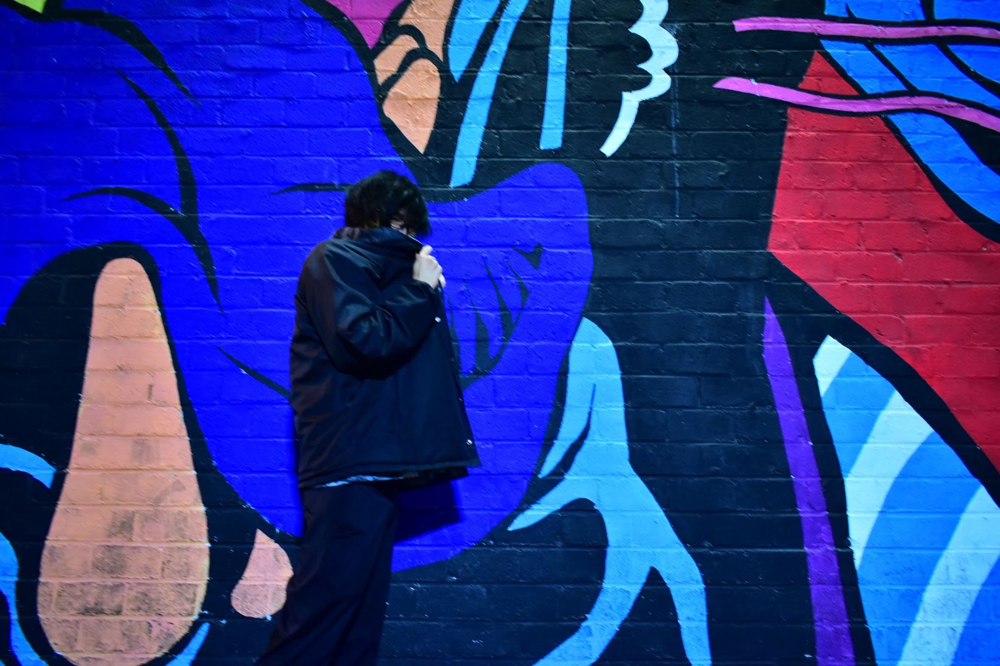

Profile
メンター名：しぐれ
Life is Tech!元メンバー
Leaders10期、DTM初音ミクコースのメンター
普段は動画制作やミキシングなど、
他にも幅広く創作活動してる。
Life is Tech!元メンバー
Leaders10期、DTM初音ミクコースのメンター
普段は動画制作やミキシングなど、
他にも幅広く創作活動してる。
元々、大阪芸術大学に在学。
しかし、やりたい事を見つけ大学を辞め専門学校に編入。
音楽技術学科、音響エンジニアを専攻し、
レコーディングや舞台音響などに携わっている。
UTAUというソフトを使用して
自分の声をボーカロイド化したり、
様々な音声を使った制作や、人間の様に喋らせてみたり、
そういった人とは少し違う音の制作が得意。
niconico
イカさんにUTAってもらいました。鬱Pの「生きてるおばけは生きている」カバーです！デスボイカさんを作りたかった選曲。
— しぐれ@LiT! (@shigure049) January 11, 2019
UTAU音源製作者:もやしちゃん(@moyasi_Sousaku ) 中の人:イカさん(@sanu22 )
MIXと調声についてはリプ欄に書いてくので興味あれば！！ pic.twitter.com/LHvhNnveFp